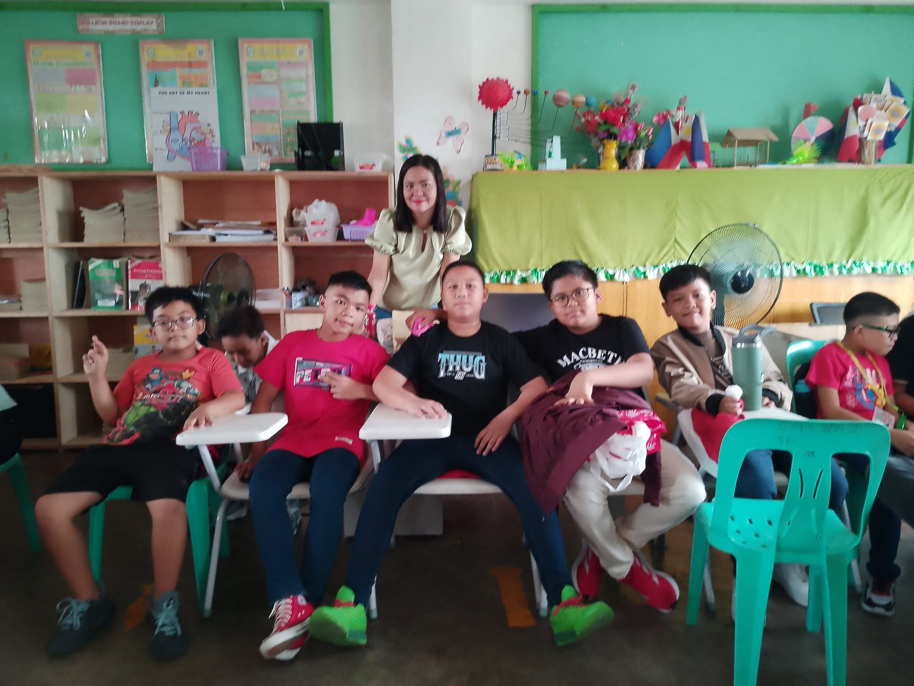
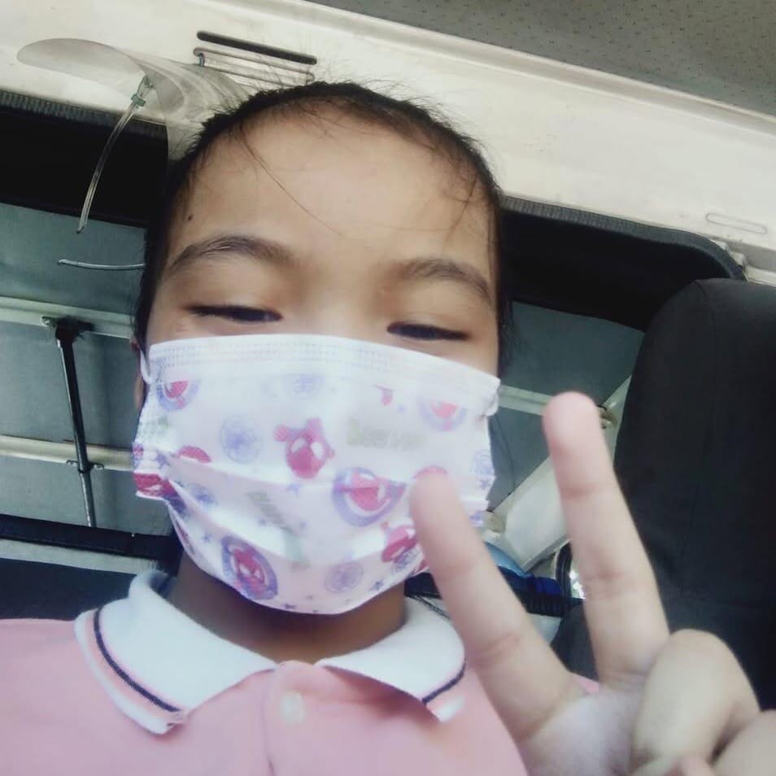

Apol, my first friend here in Tagsci, a tad awkward to be around at first, but he's a nice guy once you know him, though you may tire of his talks about random facts and trivia, along with TF2 things.

Apol, my first friend here in Tagsci, a tad awkward to be around at first, but he's a nice guy once you know him, though you may tire of his talks about random facts and trivia, along with TF2 things.
Ah, I miss these fools, the old group, called the K-Group, no, it does not mean anything like K-Pop or whatever, it instead means Kagawad and Kapitan, I was their captain, and they were my kagawad, good times, the group name was given by my grade 5 adviser, who was basically also in the friend group too.

His name's Wayne, so, Batman, and to him, I am his sensei, in chess, and on something we'll touch on later. He's also quite nice, doesn't intrude my personal space much, unlike SOME PEOPLE OUT THERE, YOU KNOW WHO YOU ARE, oh, and he's a pretty fun guy to be around.
The only member of the old group I will go a bit in-depth about, this is Luis, a good badminton player and a scout. When I first met him in grade 4, he was, let's say, a tad unpleasant to be around, but I grew closer to him, and somehow, at some point, he started to soften up, then he became one of my best friends. Currently, as far as I know, he's in a private school, still playing badminton.

Mau, a classmate from grade 5 and 6, one of the only ones still in contact with me actually, almost everyday, we talk, and somewhat recently, I've picked up quite the feeling for her, who knows and cares when that happened, but it did happen during the -ber months. I shan't tell her yet though, school first and stuff, and besides, what're the chances she reciprocates those feelings?